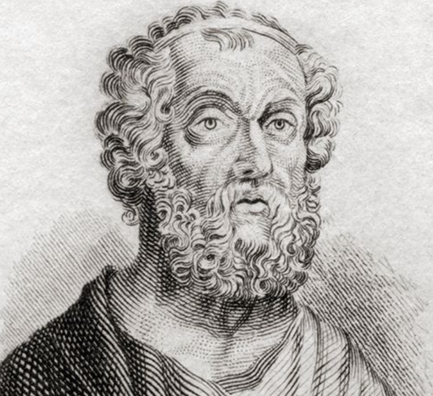
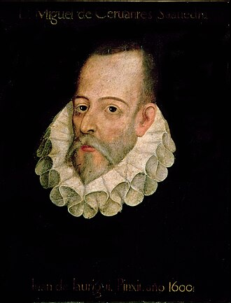
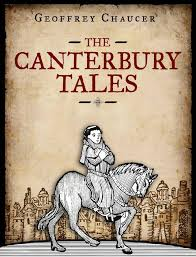
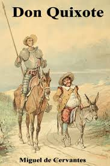
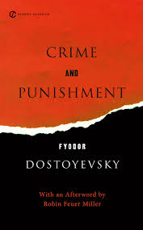

Ancient Greek
Was Divided Into 5 periods Mycenaean Period (c. 1600-1100 BCE),Dark Ages (c. 1100-800 BCE),Archaic Period (c. 800-500 BCE), Classical Period(c. 500-323 BCE), Hellenistic Period (c. 323-30 BCE), Began after the Greek Dark Ages, following the Mycenaean civilization,and ended at the death of the Roman Emperor Alxander the great
Medieval period
Also known as the middle ages, divided into three Ages Early Middle Ages (c. 5th to 10th century), High Middle Ages (c. 10th to 13th century), Late Middle Ages (c. 13th to 15th century). Starting at the Fall of the Roman Empire, Ending at the fall of Constantinople to the Ottoman Empire marking the end of the Byzantine Empire, And Starting a new age of exploration started by Christopher Columbus when he arrived in America
Renaissance period
Also known the age of Rebirth, was Divided into three timelines Early Renaissance (1401-1490), High Renaissance (1490s-1520s), Late Renaissance (1520s-1600), The Renaissance immediately following the Middle Ages and conventionally held to have been characterized by a surge of interest in Classical scholarship and values. ended in Italy with the fall of Rome in 1527, and it was eclipsed by the Reformation and Counter-Reformation elsewhere in Europe by the end of the 16th century.
Modern era
The Modern Era in European history began in the late 18th century, marked by transformative events such as the French Revolution (1789), which ended monarchical rule and introduced democratic ideals, and the Industrial Revolution (1760–1840), which brought significant technological, social, and economic changes. Key features of this era include the rise of nation-states, secularization, rapid scientific advancements, capitalist economies, global trade expansion, and revolutionary movements promoting liberty and equality. These developments fundamentally reshaped European society.

Homer
Was a blind poet who wrote the two Epics, The Iliad and the Odyssey, Born around the 8th century BCE, Homer was considered as the most Influential author in ancient Greek if not the whole world
Geoffrey Chaucer
He was an English poet, author, a civil servant best known for The Canterbury Tales. He has been called the "father of English literature", or, alternatively, the "father of English poetry". He was the first writer to be buried in what has since come to be called Poets' Corner, in Westminster Abbey.

Miguel de Cervantes
was a Spanish writer widely regarded as the greatest writer in the Spanish language and one of the world's pre-eminent novelists. He is best known for his novel Don Quixote, a work considered as the first modern novel.e
Fyodor Dostoevsky
was a Spanish writer widely regarded as the greatest writer in the Spanish language and one of the world's pre-eminent novelists. He is best known for his novel Don Quixote, a work considered as the first modern novel.

The Odyssey
The Odyssey is one of two major ancient Greek epic poems attributed to Homer. It is one of the oldest surviving works of literature and remains popular with modern audiences.

the canterbury tales
The framing device for the collection of stories is a pilgrimage to the shrine of Thomas Becket in Canterbury, Kent. written by Geoffrey Chaucer in middle English (1387-1400)

Don Quixote
is a Spanish novel by Miguel de Cervantes. It was originally published in two parts, in 1605 and 1615. Considered a founding work of Western literature, it is often said to be the first modern novel.

Crime and Punishment
Crime and Punishment is a novel by the Russian author Fyodor Dostoevsky. It was first published in the literary journal The Russian Messenger in twelve monthly installments during 1866.